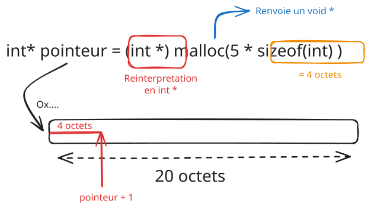
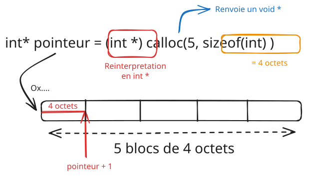
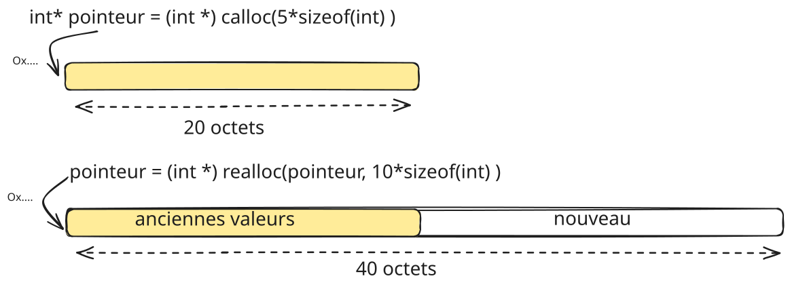
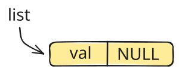
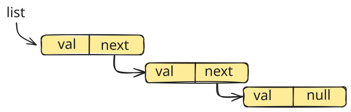
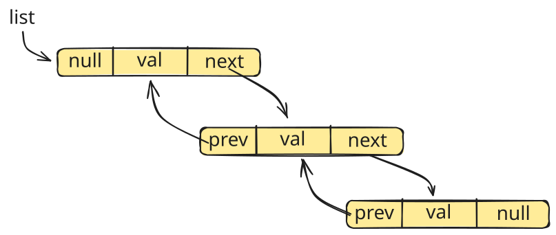

CM4 - Allocation dynamique de mémoire
Dans ce CM, nous nous intéressons à la notion d'allocation dynamique de mémoire en C. Il s'agit d'allouer dans la mémoire de l'ordinateur des blocks dont la taille est incertaine à la compilation. Nous verrons comment allouer et libérer de la mémoire en C. Nous illustrerons l'intérêt en introduisant la première structure de données dans ce cours : la liste chaînée.
Table des matières
- Pourquoi allouer dynamiquement de la mémoire ?
- Les fonctions
mallocetcalloc - De l'importance de libérer la mémoire
- La fonction
realloc - Les listes chaînées
Pourquoi allouer dynamiquement de la mémoire ?
Nous avons vu dans le CM précédent la notion de pointeurs et de tableaux. Dans ce cadre, lorsque l'on allouait de la mémoire pour un tableau d'entiers par exemple :
int tab[10];la taille du tableau était fixée. Il arrive cependant que l'on ai besoin de stocker un nombre de données dont la taille est inconnue à l'avance. C'est à dire au moment de la compilation du programme. Par exemple si l'on veut créer un tableau dont la taille est demandée à l'utilisateur pour la remplir d'entiers naturels on écrirait :
#include <stdio.h>
int main(){
int n;
printf("Entrez la taille du tableau : ");
scanf("%d", &n);
int tab[n];
for (int i = 0; i < n; i++)
{
tab[i] = i;
}
for (int i = 0; i < n; i++)
{
printf("%d\n", tab[i]);
}
return 0;
}Dans ce cas si l'on teste avec une valeur de 100 ou 1000, le code semble marcher et affiche bien le résultat attendu. Toutefois, cela es tun comportement relativement nouveau (C99) dépendant de ce qu'on appele les variable-length arrays (VLA) et n'est pas supporté par tous les compilateurs. De plus, la mémoire est allouée dans la pile comme pour tout ce que l'on a vu jusqu'à présent. Or, la pile est limitée en taille La taille de la pile dépend du système d'exploitation et de la configuration de la machine en pratique. et si l'on veut allouer un tableau de taille importante, on risque de dépasser la taille de la pile et d'avoir une erreur de type stack overflow. Pour s'en rendre compte, essayons ceci:
#include <stdio.h>
int main() {
int n = 1000000; // Start with a large value
while (n > 0) {
printf("Trying to allocate array of size: %d\n", n);
int arr[n]; // Attempt to allocate a large VLA
arr[0] = 0; // Access the array to ensure it's allocated
n += 100000; // Increase array size for the next iteration
}
return 0;
}qui donne sur un terminal :
Trying to allocate array of size: 1000000
Trying to allocate array of size: 1100000
Trying to allocate array of size: 1200000
Trying to allocate array of size: 1300000
Trying to allocate array of size: 1400000
Trying to allocate array of size: 1500000
Trying to allocate array of size: 1600000
Trying to allocate array of size: 1700000
Trying to allocate array of size: 1800000
Trying to allocate array of size: 1900000
Trying to allocate array of size: 2000000
Trying to allocate array of size: 2100000
fish: Job 1, './bigalloc' terminated by signal SIGSEGV (Address boundary error)On voit que l'on obtient une erreur de segmentation (SIGSEGV) qui est une erreur de type stack overflow. Cela signifie que l'on a dépassé la taille de la pile et que le programme a été arrêté. C'est pourquoi il est préférable d'allouer de la mémoire dynamiquement. Cela permet d'allouer de la mémoire dans le tas (heap) qui est plus grand que la pile.
De plus, il est possible que l'on veuille allouer de la mémoire pour des structures de données plus complexes que des tableaux : Par exemple une liste dont la taille change avec l'exécution. L'allocation dynamique de mémoire est alors indispensable.
Les fonctions malloc et calloc
Pour allouer de la mémoire dynamiquement, C propose deux fonctions: malloc et calloc dont les différences seront illustrées plus bas.
La fonction malloc
La fonction malloc permet d'allouer de la mémoire dans le tas. Elle prend en argument le nombre d'octets à allouer et retourne un pointeur sur la mémoire allouée. Par exemple, pour allouer un tableau de 10 entiers, on écrirait :
int *tab = (int *)malloc(10 * sizeof(int));On peut alors accéder aux éléments du tableau comme d'habitude :
tab[0] = 0;
*(tab + 1) = 1;La syntaxe de malloc pour une allocation sur un objet quelconque est la suivante :
type *ptr = (type *)malloc(n * sizeof(type));où type est le type de l'objet à allouer et n le nombre d'objets à allouer. À noter que l'on a écrit (type *) à la place de type * pour indiquer au compilateur que l'on veut un pointeur de type type et non un pointeur de type void qui est le type de retour de malloc. La fonction malloc retourne un pointeur de type void qui est un type générique en C pour désigner un pointeur vers n'importe quoi. En ce sens malloc permettant d'allouer de la mémoire pour nimporte quel type, il retourne un pointeur de type void.. Réinterpretez le void * en un pointeur compatible avec le type est important pour que l'arithmétique des pointeurs fonctionne correctement.
En résumé nous avons la situation suivante :

Exercice
Écrire un programme qui alloue un tableau de 10 entiers et l'initialise avec les valeurs de 0 à 9. Affichez ensuite les valeurs du tableau.
Créer une structure Pers qui contient un nom et un prénom. Allouez dynamiquement un tableau de 5 structures Pers et initialisez les noms et prénoms avec des valeurs demandées à l'utilisateur. Affichez ensuite les valeurs des noms et prénoms.
La fonction calloc
La fonction calloc est similaire à malloc à la différence que calloc initialise la mémoire allouée à 0. La syntaxe est la suivante :
type *ptr = (type *)calloc(n, sizeof(type));En résumé nous avons la situation suivante :

De l'importance de libérer la mémoire
Il est important de libérer la mémoire allouée dynamiquement lorsque l'on a fini de l'utiliser. En effet, si l'on ne libère pas la mémoire, celle-ci reste allouée et n'est pas utilisée. Cela peut poser des problèmes de fuites de mémoire (memory leaks) qui peuvent ralentir le programme et consommer de la mémoire inutilement. Pour libérer la mémoire allouée par malloc ou calloc, on utilise la fonction free :
free(ptr);où ptr est le pointeur sur la mémoire allouée. Par exemple, pour libérer un tableau de 10 entiers alloué avec malloc, on écrirait :
free(tab);Il est important de noter que l'on ne peut libérer que de la mémoire allouée dynamiquement. Si l'on essaie de libérer de la mémoire allouée statiquement, le programme plantera. Par exemple :
int tab[10];
free(tab);donnera une erreur de segmentation (SIGSEGV) telle que :
test(3505,0x7ff849e8cdc0) malloc: *** error for object 0x7ff7be1592c0: pointer being freed was not allocatedcar le tableau tab a été alloué statiquement et non dynamiquement.
La fonction realloc
Par moments, il peut être nécessaire de redimensionner un bloc de mémoire alloué dynamiquement. Pour cela, C propose la fonction realloc qui permet de redimensionner un bloc de mémoire alloué dynamiquement. La syntaxe est la suivante :
type *ptr = (type *)realloc(ptr, n * sizeof(type));où ptr est le pointeur sur le bloc de mémoire à redimensionner et n la nouvelle taille du bloc. realloc retourne un pointeur sur le bloc redimensionné. Si la redimension est impossible, realloc retourne NULL et le bloc original est préservé. Par exemple, pour redimensionner un tableau de 10 entiers en un tableau de 20 entiers, on écrirait :
tab = (int *)realloc(tab, 20 * sizeof(int));Il est important de noter que realloc peut déplacer le bloc de mémoire alloué. Il est donc important de ne pas conserver de pointeurs sur le bloc original après un appel à realloc pour éviter des erreurs de segmentation.
En résumé, nous avons la situation suivante :

Les listes chaînées
Les listes chaînées sont une structure de données très utiles lorsque l'on ne connaît pas à l'avance la taille des données que l'on souhaite stocker. Contrairement aux tableaux, les listes chaînées permettent de rajouter et de supprimer des éléments de manière dynamique, sans avoir à redimensionner manuellement la mémoire. Une liste chaînée est composée de plusieurs nœuds, chaque nœud contenant deux informations : une donnée et un pointeur vers le nœud suivant.
Structure d'une liste chaînée
Pour représenter une liste chaînée en C, on utilise généralement une structure. Par exemple, pour créer une liste chaînée qui stocke des entiers, on peut définir une structure comme suit :
struct Node {
int data;
struct Node* next;
};Ici, chaque Node (nœud) contient un entier data et un pointeur next qui pointe vers le nœud suivant de la liste.
Par exemple, on peut créer une liste à un élément avec. On utilise une notation fléchée qui permet de simplifier l'écriture : newNode->data est équivalent à (*newNode).data et newNode->next est équivalent à (*newNode).next. :
struct Node* head = NULL;
struct Node* newNode = (struct Node*) malloc(sizeof(struct Node));
newNode->data = 10;
newNode->next = NULL;
head = newNode;On a créé un nœud avec la valeur 10 et le pointeur next à NULL. Le pointeur head pointe sur le premier nœud de la liste. Cela correspond à la situation suivante :

Une liste à trois éléments ressemblerait à :
struct Node* head = (struct Node*) malloc(sizeof(struct Node));
struct Node* second = (struct Node*) malloc(sizeof(struct Node));
struct Node* third = (struct Node*) malloc(sizeof(struct Node));
head->data = 1;
head->next = second;
second->data = 2;
second->next = third;
third->data = 3;
third->next = NULL;On obtient la situation suivante :

Création et ajout de nœuds
Pour ajouter un élément dans une liste chaînée, il faut d'abord allouer dynamiquement de la mémoire pour un nouveau nœud en utilisant la fonction malloc. Selon si on veut ajouter un élément en tête, en queue ou bien à un endroit précis de la liste.
Exercice :
- Faire un dessin des trois situations à gérer pour ajouter un élément dans une liste chaînée.
- Écrire une fonction qui ajoute un élément en tête de liste.
Parcours de la liste chaînée
Pour parcourir une liste chaînée, il suffit de suivre les pointeurs next jusqu'à ce que l'on atteigne un nœud dont le pointeur est NULL. Voici un exemple de parcours d'une liste chaînée :
struct Node* current = head;
while (current != NULL) {
printf("%d ", current->data);
current = current->next;
}Ce code affiche les éléments de la liste chaînée en commençant par la tête et en suivant chaque nœud jusqu'à la fin de la liste.
Suppression de nœuds
La suppression d'un nœud dans une liste chaînée nécessite d'abord de mettre à jour les pointeurs pour ne plus faire référence au nœud à supprimer. Ensuite, il est important de libérer la mémoire allouée pour ce nœud en utilisant la fonction free. Voici un exemple de suppression du premier nœud :
struct Node* temp = head;
head = head->next;
free(temp);Dans cet exemple, nous stockons temporairement le nœud à supprimer dans temp, mettons à jour head pour pointer vers le nœud suivant, puis libérons la mémoire associée à l'ancien nœud de tête.
Exercice
Écrire un programme qui implémente une liste chaînée simple en C. Votre programme doit permettre d'ajouter des nœuds, de les afficher et de les supprimer. Vous pouvez commencer avec les éléments suivants :
- Créer une structure
Nodeavec un entier et un pointeur vers le nœud suivant. - Implémenter des fonctions pour ajouter un élément en tête, parcourir et afficher la liste, et supprimer un nœud.
Exemple de liste doublement chaînée

Voici un exemple de liste doublement chainée, c'est à dire que chaque noeud contient un pointeur vers le suivant et le précédent, de type double obtenue sur github. On ne regardera cette implémentation évidemment qu'après avoir essayé l'exercice tout seul. :
Code de l'exemple
/**
* @file
* @brief Implementation of [Doubly linked list](https://en.wikipedia.org/wiki/Doubly_linked_list)
* @details
* A doubly linked list is a data structure with a sequence
* of components called nodes. Within that nodes there are
* three elements: a value recorded, a pointer to the next
* node, and a pointer to the previous node.
*
* In this implementation, the functions of creating the list,
* inserting by position, deleting by position, searching
* for value, printing the list, and an example of how the
* list works were coded.
*
* @author [Gabriel Mota Bromonschenkel Lima](https://github.com/GabrielMotaBLima)
*/
#include <stdio.h>
#include <stdlib.h>
/**
* @brief Doubly linked list struct
*/
typedef struct list
{
double value; ///< value saved on each node
struct list *next, *prev; ///< directing to other nodes or NULL
} List;
/**
* @brief Create list function, a new list containing one node will be created
* @param value a value to be saved into the first list node
* @returns new_list the list created
*/
List *create(double value);
/**
* @brief Insertion by position into the list function
* @param list a doubly linked List
* @param value a value to be inserted into the list
* @param pos a position into the list for value insertion
* @returns list the input list with a node more or the same list
*/
List *insert(List *list, double value, int pos);
/**
* @brief Deletion by position into the list function
* @param list a doubly linked List
* @param pos a position into the list for value Deletion
* @returns list the input list with deleted values or the same list
*/
List *delete(List *list, int pos);
/**
* @brief Search value into the list function
* @param list a doubly linked list
* @param value a value to be looked for into the list
* @returns `1` if the looked up value exists
* @returns `0` if the looked up value doesn't exist
*/
int search(List *list, double value);
/**
* @brief Print list function
* @param list a doubly linked List
* @returns void
*/
void print(List *list);
/**
* @brief Example function
* @returns void
*/
void example();
/**
* @brief Main function
* @returns 0 on exit
*/
int main()
{
// examples for better understanding
example();
// code here
return 0;
}
/**
* @brief Create list function, a new list containing one node will be created
* @param value a value to be saved into the first list node
* @returns new_list the list created
*/
List *create(double value)
{
List *new_list = (List *)malloc(sizeof(List));
new_list->value = value;
new_list->next = NULL;
new_list->prev = NULL;
return new_list;
}
/**
* @brief Insertion by position into the list function
* @param list a doubly linked List
* @param value a value to be inserted into the list
* @param pos a position into the list for value insertion
* @returns list the input list with a node more or the same list
*/
List *insert(List *list, double value, int pos)
{
// list NULL case
if (list == NULL)
{
list = create(value);
return list;
}
// position existing case
if (pos > 0)
{
List *cpy = list, *tmp = cpy;
int flag = 1, index = 1, size = 0;
while (tmp != NULL)
{
size++;
tmp = tmp->next;
}
// first position case
if (pos == 1)
{
List *new_node = create(value);
new_node->next = cpy;
cpy->prev = new_node;
list = new_node;
return list;
}
// position existing in list range case
if (size + 2 > pos)
{
while (cpy->next != NULL && index < pos)
{
flag++;
index++;
cpy = cpy->next;
}
List *new_node = (List *)malloc(sizeof(List));
new_node->value = value;
// position into list with no poiting for NULL
if (flag == pos)
{
cpy->prev->next = new_node;
new_node->next = cpy;
new_node->prev = cpy->prev;
cpy->prev = new_node;
}
// last position case
if (flag < pos)
{
new_node->next = cpy->next;
new_node->prev = cpy;
cpy->next = new_node;
}
}
return list;
}
}
/**
* @brief Deletion by position into the list function
* @param list a doubly linked List
* @param pos a position into the list for value Deletion
* @returns list the input list with deleted values or the same list
*/
List *delete(List *list, int pos)
{
// list NULL case
if (list == NULL)
return list;
// position existing case
if (pos > 0)
{
List *cpy = list, *tmp = cpy;
int flag = 1, index = 1, size = 0;
while (tmp != NULL)
{
size++;
tmp = tmp->next;
}
// first position case
if (pos == 1)
{
if (size == 1)
return NULL;
cpy = cpy->next;
cpy->prev = NULL;
return cpy;
}
// position existing in list range case
if (size + 2 > pos)
{
while (cpy->next != NULL && index < pos)
{
flag++;
index++;
cpy = cpy->next;
}
if (flag == pos)
{
// position into list with no poiting for NULL
if (cpy->next != NULL)
{
cpy->prev->next = cpy->next;
cpy->next->prev = cpy->prev;
}
// last position case
else
cpy->prev->next = NULL;
}
}
return list;
}
}
/**
* @brief Search value into the list function
* @param list a doubly linked list
* @param value a value to be looked for into the list
* @returns `1` if the looked up value exists
* @returns `0` if the looked up value doesn't exist
*/
int search(List *list, double value)
{
if (list == NULL)
return 0;
if (list->value == value)
return 1;
search(list->next, value);
}
/**
* @brief Print list function
* @param list a doubly linked List
* @returns void
*/
void print(List *list)
{
if (list != NULL)
{
printf("%f\t", list->value);
print(list->next);
}
}
/**
* @brief Example function
* @returns void
*/
void example()
{
List *my_list = NULL;
double node_value = 0;
int searching;
my_list = create(node_value);
my_list = insert(my_list, 3, 1);
my_list = insert(my_list, 5, 3);
my_list = insert(my_list, 10, 3);
my_list = insert(my_list, 20, 3);
print(my_list);
searching = search(my_list, 20);
printf("\n%d\n", searching);
my_list = delete (my_list, 1);
my_list = delete (my_list, 1);
my_list = delete (my_list, 1);
my_list = delete (my_list, 1);
print(my_list);
searching = search(my_list, 20);
printf("\n%d\n", searching);
}